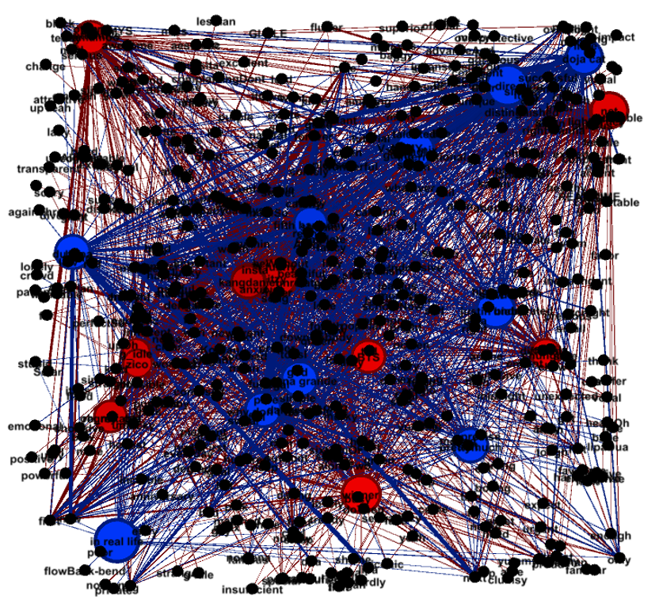

유튜브 댓글 속 소비자 반응 분석을 통한
국내, 영미 인기 댄스곡 아티스트 다각적 비교
5조 이용주, 이유정
1. 소개
한국과 영미권에서 주류로 소비되는 음악 콘텐츠는 컨셉에 있어서 지속적으로 차이가 발생해 왔다. 한국의 경우 한국기업평판연구소에서 지속적으로 제공하는 가수 브랜드 평판 순위를 참고하고, 영미권의 경우 빌보드 차트를 참고하여 가장 소비가 많이 발생하는 아티스트 경향을 추론할 수 있다. 물론 ‘정량화할 수 없는 추상적인 컨셉’의 개념이기에 명시적으로 구분할 수는 없지만, 경험적 분석 관점에 있어서 어느정도 이질적 특성을 발견할 수 있다. 국내 아티스트의 경우 과거 동방신기, 소녀시대, 빅뱅, 엑소, BTS, 오마이걸의 흐름으로 가는 것에 알 수 있듯이 소년미, 소녀미를 소비자들이 이상적으로 기대하는 경향이 있다. 반면 영미권의 경우 에미넴, 비욘세, 켄드릭 라마, 도자 캣 등의 흐름으로 보아 보다 강렬하고 건강미를 뽐내는 이상향을 추구하는 경향이 있다. 주류로 소비되는 아티스트의 컨셉에 경향성이 있다는 것은 주 소비층 문화의 특성의 영향일 가능성이 크다. 생태 자체가 대중문화 아티스트는 필연적으로 대중의 기호에 따라 만들어지기 때문이다. 따라서 각 도메인의 아티스트들에게 바라는 대중의 일반적인 기대치에 차이가 있음을 가정할 수 있다.

2. 연구목적
만약 문화권에 따른주류 대중음악 소비자의 기호 경향성을 사전에 확인할 수 있다면, 한 문화권의 아티스트가 다른 문화권의 시장으로 진입하려 시도할 때 참고해야 할 컨셉 레퍼런스를 알 수 있을 것이다. 해당 시장에 대한 실질적인 이해를 사전에 탑재하여 전략적인 기획을 구성한다면, 보다 적응력과 성공률이 높은 경쟁이 가능해질 것으로 판단된다. 그러한 필요성을 기반에 둔 본 연구는 대중음악 장르 중에서도 주류라고 할 수 있는 댄스곡 아티스트를 대상으로 각 문화권 별 소비자의 반응을 비교하고자 목적을 두었다. 확인하고자 하는 반응은 크게 3가지로 구분할 수 있다.
- 국내 뮤비의 한글 및 영어 댓글과 해외 뮤비의 영어댓글에는 아티스트를 평가하는 단어의 범주 차이 가수에 대한 평가에 있어서 반복적으로 발생하는 형용사를 비교한다면, 빈도 수에 따라 각 문화권의 소비자가 원하는 이상향을 추론할 수 있을 것이다.
- 국내-영미 인기 댄스 가수들의 평가 기반 상관관계 각 가수의 평가에 사용된 단어(컨셉)들의 유사성을 확인하여, 유사한 아티스트들끼리 묶을 수 있을 것이다. 문화권을 구분하지 않고 아티스트끼리 소비자의 반응에 따라 군집을 형성한다면, 특정 아티스트가 상대 문화권으로 진입하는데 있어서 본인과 유사하거나 컨셉을 참고할 만한 레퍼런스의 기준을 삼을 수 있을 것이다.
- 성별, 문화권 별 부정적 피드백 빈도 차이 분석대상인 '댄스가수의 특성’ 상 (특히 여성 아티스트의 경우) 다른 장르에 비해 노출이 많고 시각적으로 과감한 안무가 다른 장르보다 많을 수밖에 없다. 한국은 영미권보다 전통적으로 보수적이며 비판적인 시각을 가지고 있으며, 외모지상주의가 심하고 평가가 잦은 국가로 보통 인지되고 있다. 그런 문화적 차이 속에서 노출되는 육체적 퍼포먼스 부분에 있어서 소비자의 평가에 있어서 부정성의 비율이 유의미하게 높은지 확인해 볼 필요가 있다.
3. 분석 설계
Step1. Web Scrapping & Text Parsing : Youtube api 사용


[데이터 소스]
- 현재 활동 중인 댄스가수 중, 유튜브 2020년 5월 인기차트 상위권 순서대로
- 국내 아이돌 10그룹(남자 5그룹, 여자 5그룹)
- 해외 아이돌 10그룹(남자 5그룹, 여자 5그룹)
- 최신(2015년 이후)의 뮤비&인터뷰 최신순-가장 조회수 많은 순으로 3개씩.
- 감성분석은 편향을 방지하기 위해서 뮤비 대신 인터뷰 영상으로 교체.
- 현재 활동 중인 댄스가수 중, 유튜브 2020년 5월 인기차트 상위권 순서대로
소셜 네트워크 분석용(뮤비)
- 각 가수 뮤비 별 국내 뮤비 한글 댓글 중 상위 빈도 70개
- 각 가수 뮤비 별 국내 뮤비 영어 댓글 중 상위 빈도 70개
- 각 가수 뮤비 별 해외 뮤비 영어 댓글 중 상위 빈도 70개
감성분석용(인터뷰)
- 동일한 목록의 아티스트 별 인터뷰 영상에 따른 댓글 400개 씩 샘플링
Step2. Text filtering & Tokenization
- 크롤링한 데이터셋 토근화 작업
- 최종적으로는 형용사만 남게 변환
- 한글 댓글은 영어로 변환
- 댓글의 댓글은 제외
- 한글, 영어 언어만 취급
- 처음 크롤링 과정에서 데이터 양의 불균형을 막기위해 최대 2만개의 댓글만 수집
Step3. Analysis & Visualization
- tableau 툴 활용하여 빈도를 면적으로 시각화하여 분석
- Gephi 툴 활용하여 소셜 네트워크 분석 실행
- Python에서 감성분석 실행
4. 분석 결과
국내 뮤비의 한글 및 영어 댓글과 해외 뮤비의 영어댓글에는 아티스트를 평가하는 단어의 범주에서 유의미한 차이가 발생할 것이다.
Ex) 귀엽다(Cute)는 국내뮤비 한글댓글이 영어댓글들보다 유의미하게 많지 않을까?
국내 한글

국내 영어

해외 영어

- 국내한글 최대 빈도수 단어 [좋다, 같다, 예쁘다, 미치다, 멋지다, 좋아하다, 많다, 설레다, 잘생기다, 귀엽다, 멋있다…]
- 국내영어 최대빈도수 단어 [good, much, beautiful, new, happy, great, first, next…]
- 해외영어 최대 빈도수 단어 [good, much, little, new, beautiful, happy, only, many, old, next, same…]
- 국내뮤비의 한글, 영어 댓글과 해외뮤비의 영어 댓글을 비교해보았을 때 기본적으로 차이는 명확하게 보이지 않음. 대체적으로 유사한 의미의 패턴을 보이고 있음.
- 댓글은 예상과 달리 주로 해당 아티스트에 대한 평가[멋있다, 섹시하다, 귀엽다 등]보다는 자신의 감정 상태[좋다, 행복하다, 설레다 등]를 나타내는 표현이 훨씬 더 많았음.
- 대상 아티스트 평가에 해당하는 단어를 분석해보면 [잘생겼다, 예쁘다 등] 외적 요소 평가가 많음.
- 세 범주의 댓글분석 결과 공통적으로, [좋음, 새로운, 아름다운, 행복, 멋있음] 의 단어가 많았음.
- 영어 댓글이 한글 댓글보다 좀 더 다양한 단어로 의견을 표현하는 경향이 있음. 하지만 beautiful, cute, handsome과 같은 외적 요소를 칭찬하는 단어는 한글 댓글이 영어댓글보다 높은 순위에 배치되고 있으나, 이는 언어적 측면에서 기인한 것으로 사료됨. 예를들어 멋있다는 한글단어를 영어에서는 cool, great, awesome 등 일상언어로 더 다양하게 표현할 수 있음. 즉, 비슷한 의미의 평가를 여러 어휘로 평가할 수 있는 자유도가 높다보니 순위에 있어서 차이가 발생하게 됨.
- 정보 보안 상 정확히 증명할 수 있는 방법은 없으나 영어 댓글이라고 해서 꼭 영미권 사용자라고 판단하기는 힘듦. 특정 나라를 연상하게 하는 단어를 통해 다양한 국적의 사람들이 참여한다는 것을 체감할 수 있었음.
- 국내,해외 각 아티스트 별 빈도 수 비교도 실행하였으나, 큰 틀(상위빈도 순위범주 등)에서 두드러진 차이는 존재하지 않음.